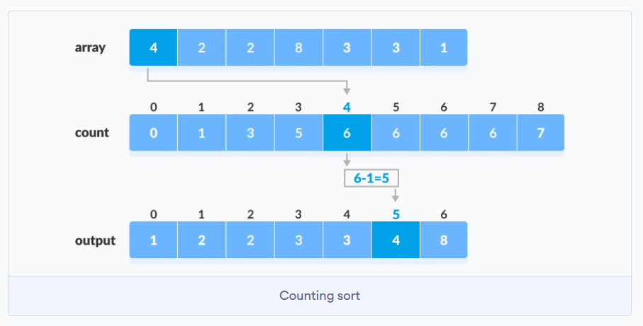

Algoritmos de ordenación
La ordenación es una de las técnicas fundamentales que se utilizan en la resolución de problemas, especialmente en los relacionados con la escritura y la implementación de algoritmos eficientes.
Por lo general, la ordenación se combina con la búsqueda, lo que significa que primero ordenamos los elementos de la colección dada, luego buscamos algo dentro de ella, ya que generalmente es más fácil buscar algo en una colección ordenada, en lugar de sin ordenar.
Ordenar un array es el proceso de ordenar sus elementos en orden ascendente o descendente. Los algoritmos de ordenación se encuentran entre los algoritmos más utilizados en computación.
Bubble sort (Burbuja)
Funciona intercambiando elementos adyacentes si no están en el orden deseado. Este proceso se repite desde el principio del array hasta que todos los elementos están en orden.
Sabemos que todos los elementos están en orden cuando logramos hacer toda la iteración del array sin intercambiar ningún elemento en absoluto; entonces, todos los elementos que comparamos estaban en el orden deseado con sus elementos adyacentes y, por extensión, todo el array.
Ejemplo:
[4, 2, 1, 5, 3] - Paso 1: como 4 > 2, los intercambiamos
[2, 4, 1, 5, 3] - Paso 2: como 4 > 1, los intercambiamos
[2, 1, 4, 5, 3] - Paso 3: como no se cumple 4 > 5, los dejamos igual
[2, 1, 4, 5, 3] - Paso 4: como 5 > 3, los intercambiamos
[2, 1, 4, 3, 5] - Este es el resultado del array después de la primera iteración del bucle externo.
Como al menos se produjo un intercambio durante la primera iteración (en realidad hubo tres), debemos revisar todo el array otra vez y repetir el mismo proceso.
Repetiremos este proceso, hasta que no se realicen más intercambios, que será cuando tengamos el array ordenado.
La razón por la que este algoritmo se llama Bubble sort es porque los números "burbujean" hasta la "superficie".
Si seguimos haciendo trazas en el ejemplo, siguiendo un número en particular (4 es un gran ejemplo), verás que se mueve lentamente hacia la derecha durante el proceso.
Complejidad temporal
Para calcular la complejidad temporal de Bubble Sort, necesitamos mirar el peor escenario posible. ¿Cuál es la cantidad máxima de veces que necesitamos pasar por todo el array antes de ordenarlo?
El peor escenario sería [5, 4, 3, 2, 1]. En la primera iteración, 5 "burbujeará hasta la superficie", pero el resto de los elementos permanecerán en orden descendente. Tendríamos que hacer una iteración para cada elemento excepto 1, y luego otra iteración para verificar que todo esté en orden, por lo que un total de 5 iteraciones.
Si pensamos en un array de n elementos, eso significa que necesitamos hacer n iteraciones.
Cada una de esas n veces estamos iterando a través de todo el array, lo que significa que la complejidad temporal en el peor de los casos sería Big-O: O(n^2).
Counting sort
El ordenamiento por conteo es un algoritmo de ordenamiento que ordena los elementos de un array contando el número de apariciones de cada elemento único en el array. El recuento se almacena en un array auxiliar y la ordenación se realiza mapeando la cuenta como un índice del array auxiliar.
¿Cómo funciona?
- Encuentra el elemento máximo
maxdel array dado.
- Crea un array de longitud
max + 1con todos los elementos a 0. Este array se utiliza para almacenar el recuento de los elementos del array.
- Almacena el recuento de cada elemento en su índice respectivo en el array de recuento. Por ejemplo: si el elemento 3 aparece 2 veces en el array, entonces 2 se almacena en la tercera posición del array de recuentos. Si el elemento "5" no está presente en el array, entonces 0 se almacena en la quinta posición.
- Almacena la suma acumulativa de los elementos del array de recuentos. Es útil colocar los elementos en el índice correcto del array ordenado.

- Encuentra el índice de cada elemento del array original en el array de conteo. Esto da el recuento acumulativo. Coloca el elemento en el índice calculado como se muestra en la figura siguiente. 
- Después de colocar el elemento en la posición correcta del array ordenado, disminuye el array de recuento para ese índice en uno.
Complejidad
La complejidad temporal en el peor caso es Big-O: O(n).